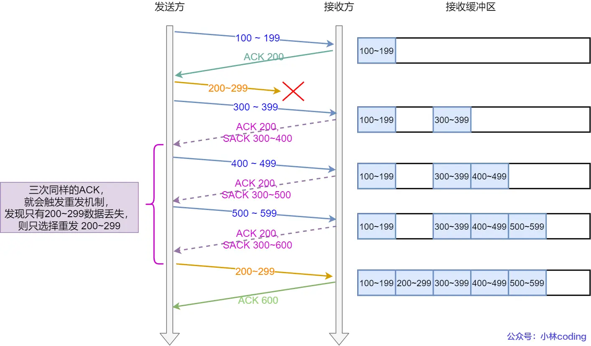
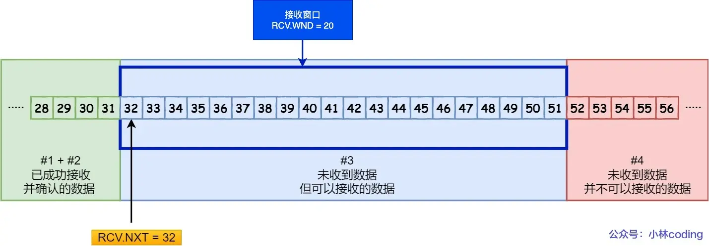
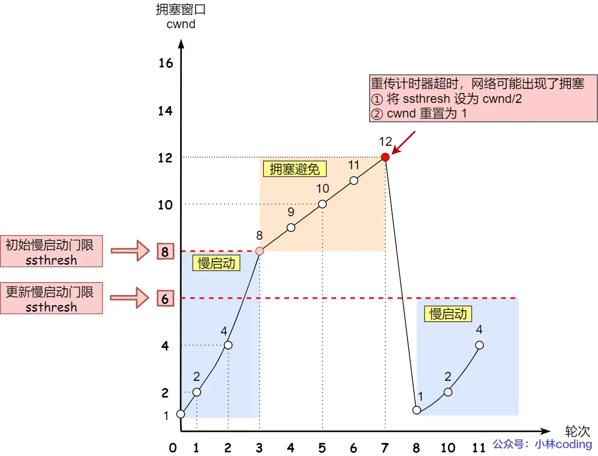

重传
超时重传
- 超时重传：发送方发送数据包后，如果在指定超时重传时间RTO（Retransmission Timeout）内没有收到接收方的确认应答，发送方会触发超时重传机制，重新发送数据包。数据包丢失、确认应答丢失是超时重传的两种情况。
- RTT（Round-Trip Time）值发送端发送数据至接收到对方ACK的时间，即包的往返时间。RTO大，发生丢包时重传变慢，效率低性能差。RTO小，可能在没有收到ACK前就进行重传，增加网络拥塞，导致更多超时，更多的超时导致更多的重传。RTO应该略大于 RTT且随之变化。通常情况下，每次超时重传后，RTO 会设置为上一次的两倍，以适应网络环境的变化。
快重传
- 快速重传基本思想是，发送方收到收到三个相同的 ACK 报文就会立马重传，而不用等到RTO到达。如果包丢失了且没有3个重复的ack则只能超时重传。比如，发送方发Seq 1，2，3，4，5；接收端收到seq 1返回ack 2；seq2 因为某些原因没收到，但是seq 3收到了，接收端仍然回ack 2表示没收到seq 2；接着seq 4，seq 5都收到了，因为seq 2没收到，所以接收端继续回ack 2；发送端收到三个ack 2，直到seq2还没收到，所以会在定时器过期之前重传seq 2；最后接收端收到了ack 2，此时seq 2 3 4 5都受到了，所以回复ack 6。
- 存在问题：如何确定需要快重传哪些数据包。假设上边丢失的是seq 2 3，如果只重传一个seq 2，对于丢失的seq 3，仍然无法正确接收，需要再发送三次ack 3才能触发重传。如果重传seq 2之后的所有报文，那seq 4 5就重复发送了，浪费资源。
SACK（ Selective Acknowledgment）选择性确认
- 接收端发送的ack报文的
选项字段添加一组SACK块，表示已经成功接收的数据段，如下示例：

接收端重传三次ack，并且通过SACK告知发送端已经接收到了100~199，300~599。按照快重传，收到三次ack 200后会有只重传200~299还是200之后的所有段的问题。发送端通过ack结合sack信息，可以发现只有200~299这段丢失，所以只重传这一段就可以了。
Duplicate SACK（D-SACK）
- 接收端使用SACK告诉发送端被重复接收的数据。作用为：1）发送方可以知道是数据包在传输途中丢失，还是接收方回应的ACK包丢失了。2）发送方可以确认自己的数据包是否因网络延迟而未能按时到达。3）指示是否在网络传输中出现了数据包的重复复制。
- ACK丢包场景。

接收方两次ACK都丢失了，发送方超时重传，重传第一个数据包3000 ~ 3499。接收端发现是重复的，就回复SACK = 3000~3500表示3000~3500已经被接收了，这是个D-SACK，ACK到4000意味着4000之前的数据都已经被接收了。这样发送端知道数据没有丢失，是接收端的ACK报文丢失了。 - 网络延时。

发送端按照顺序发送，500~999正常接收，接收端发送ack 1000；接着发送1000-1499，但被网络延迟而没被接收端接收；发送端继续发送数据包，接收端三次回复ack 1000，回复sack 1500~2000，1500~2500，1500~3000表示这些数据包被接收； 发送端收到三次相同的ACK报文后触发快重传机制，发送1000-1499；接收端收到1000-1499后反馈ack 3000，sack 1000~1500，因为ack已经到了3000，表明3000之前的都接收到了，而sack为1000~1500，所以这是个D-SACK，表示收到了重复包。所以发送端能够知道是触发快重传的原因不是发送的包丢了或者接收端回复的ack包丢了，而是因为网络延迟了。
滑动窗口
- 每发送一段数据就需要等待对端的确认（ACK），意味着发送方在接收到确认之前无法发送更多数据，通信效率很低，特别是在高RTT的网络环境中。滑动窗口是操作系统维护的一个缓冲区，通信的双方都会维护自己的发送窗口和接收窗口。
- 发送窗口大小，是无需等待确认应答，可以继续发送数据的最大值，在收到接收端ack之前，已发送的数据在缓冲区存储，按期收到ack应答就清空缓冲区。
- TCP 报文的头部中窗口大小字段是接收端用来告诉发送端自己接收窗口的大小。发送方根据接收方窗口大小调整发送，避免发送过多的数据，导致接收方的缓冲区溢出，从而造成数据丢失或者拥塞。
发送端窗口

- 发送方的缓冲区的数据共有四个部分，如上图所示：
- 已发送并收到ACK确认的数据：1~31 字节
- 已发送但未收到ACK确认的数据：32~45 字节
- 未发送但总大小在接收方窗口处理范围内（接收方还有空间）：46~51字节
- 未发送且超过接收端窗口处理范围（接收方没有空间）：52字节以后
- 如果一次性把32-51全部发送出去，可用窗口大小为0，在没收到ack之前不能继续发送数据。
- 在收到32~36字节的ACK应答后，如果发送窗口的大小没有变化，滑动窗口往右边移动5个字节，范围37~56。#1范围从31变为36，表示之前的都已经发送且收到了ack确认；#2范围变成37~51，表示发送了但还没收到ack确认；#3范围变成52~56，表示没发送但在接收端处理范围内；#4范围变成57~，表示没发送且超过了接收端处理范围。
- 四部分的数据通过三个变量来管理，两个绝对指针指向特定的序列号，一个滑动窗口大小确定滑动窗口位置。UNA指向已发送但未收到确认的数据的第一个字节位置，也就是滑动窗口的左端点；NXT指向未发送但接收端有空间的数据的第一个字节位置，也就是滑动窗口还可以发送的左端点；WND表示滑动窗口的大小，由接收方指定，即#2和#3大小之和；#4左端点字节用UNA+WND大小偏移表示。
接收端窗口

- 接收端缓冲区共有三个部分，如上图所示。
- 已成功接收并确认的数据~31，等待应用进程读取
- 未收到但可以接收的数据32~51
- 未收到且不可以接收的数据52~
- 三种类型的数据通过一个指向窗口左端点的指针NXT和窗口大小WND表示。NXT表示期望从发送方发送来的下一个数据字节位置
- 新的接收窗口大小，是接收端通过TCP报文中的窗口大小字段告诉发送端，这个报文传输过程存在时延，所以发送端和接收端的窗口大小通常是约等的，但接收端的窗口大小会动态调整，根据接收端处理数据的速度来调整窗口大小。
流量控制
- 流量控制通过动态调整接收窗口大小来限制发送方的发送速率，以确保接收方能够及时处理接收到的数据，避免数据的丢失或拥塞。滑动窗口大小会随着操作系统缓冲区中数据的处理发生改变，当系统资源紧张时，操作系统可能直接减少接收缓冲区的大小。
- 在数据传输过程中，接收方通过在ACK报文中附带当前的窗口大小（s_WND）来告知发送方自己还能接收多少数据，发送端调整自己的WND=s_WND。直到接收端窗口大小收缩为0，通过ack报文通知发送端，发送端设置WND=0。双方窗口都为0，发生窗口关闭，发送方会定时发送窗口探测报文，探测接收端窗口大小是否变化。
- 服务端系统资源紧张，操作系统可能会直接减少了接收缓冲区大小，这时应用程序没有及时读取缓存数据，那么可能出现丢包现象。
- 客户端（发送端）和服务端（接收端）初始WND=360。
- 发送端发送140，可用窗口变为220，此时UNA=1，WND=360，NXT=141。接收端接收140后，NXT=141，WND=360，由于系统繁忙，接收缓冲区大小减少120字节，并且应用进程没有读取缓存，所以接收端NXT=141，WND=360-140-120=100，然后发送ACK给发送端，附带的window=100。发送端还没收到接收端的ack报文，此时发送端可用窗口220，接收端可用窗口100。
- 发送端再发送180字节，此时UNA=1，NXT=321，WND=360，可用窗口变为40；对于接收端，180字节超出可用窗口100，导致接收缓冲区溢出，接收端丢弃该数据包，造成丢包。
- 发送端收到接收端ack=141报文后调整窗口，UNA=141，NXT=321，WND=100，此时窗口右端范围为
UNA+WND=241 < NXT=321，可用窗口范围UNA+WND-NXT=241-321=-80，出现了负值。 - TCP规定不允许同时减少缓存又收缩窗口，应该先调整窗口大小再减少缓存，避免丢包情况
窗口关闭
- 窗口关闭：按照TCP协议，当接收方告知发送方其接收窗口为0后，发送方必须停止发送数据。可能发生死锁，即发送方在等待接收方的窗口重新开启，而接收方可能正等待更多数据的到来。
- TCP引入窗口探测机制
- 发送方收到窗口为0的ack通知后，启动持续计时器，当持续计时器超时，发送方向接收方发送一个窗口探测报文，该报文不携带任何数据，只是用来询问接收方当前的窗口大小；
- 接收方在收到窗口探测报文后，会回复一个确认报文（ACK）告知发送方当前的接收窗口大小，即使其窗口大小仍然为0；
- 如果接收方的窗口重新打开（大小不再是0），但是更新窗口大小的确认报文（ACK）丢失了，发送方会再次发送窗口探测报文来询问当前的窗口大小；
- TCP通常限制窗口探测机制次数3次，每次探测窗口都为0，就会重启持续计时器。一些TCP实现中，如果探测尝试超过次数限制且没有成功打开窗口，可能会发送一个RST报文来终止连接，避免无限等待。
拥塞控制
- 流量控制主要针对发送方和接收方之间的数据传输速率问题，避免发送方发送的数据填满或超出接收方的缓存。拥塞控制考虑的是整个网络的情形，需要传输的分组超过了网络的处理能力，导致的网络延迟和数据丢失，引起重传进一步增加网络拥堵。拥塞控制基本思想是，速率=cwnd/RTT，不拥塞时候增加发送速率，拥塞时减少发送速率。
- 拥塞控制的关键变量和流程：
- 拥塞窗口（Congestion Window, cwnd）：发送方根据自己估算的网络拥堵情况动态调整的窗口大小。
- 发送窗口的调整：在拥塞控制下，发送方的实际发送窗口大小变为拥塞窗口（cwnd）和流量控制的接收窗口（rwnd）中的较小值。
- 拥塞控制算法主要包括基于丢包、基于延迟、丢包延迟相结合、基于模型、基于学习等。
- 基于丢包：Tahoe、Reno、NewReno、SACK、CUBIC
- 基于延迟：Vegas
- 基于建模：BBR
Tahoe、Reno算法

- Tahoe算法有
慢启动、拥塞避免两个阶段，Reno算法增加了快速恢复阶段。 - 慢启动：假设初始cwnd=1MSS，第一次传一个MSS大小数据，接下来每收到一个分段确认ack，
cwnd+1MSS，一个RTT后，cwnd个ack回来，所以每个RTT内cwnd倍增。cwnd小于慢启动门限ssthresh（一般是64k字节）时候是慢启动阶段倍数增长，超过ssthresh进入拥塞避免阶段线性增长。 - 拥塞避免：上图以ssthresh=8MSS为例，cwnd超过门限进入拥塞避免阶段。每收到一个ack，增加1/8个cwnd，即在拥塞避阶段，只要未收到重复确认，在每个RTT内，cwnd+1MSS，cwnd变成线性增长，直到cwnd=12MSS。当网络拥塞出现丢包，出发重传，有快重传和慢重传两种。
TCP设计之初，当一个数据包经过一个RTO没有收到ack时，发送方就会进行重传。为了避免错误重传，RTO通常很大，导致重传包的延迟（从第一次发出到真正被收到的延迟）非常大。Tahoe算法设计了快速重传，当发生拥塞（计时器超时或者收到三个冗余ACK），慢启动门限ssthresh降为
cwnd/2=6MSS，cwnd=1MSS，接着重新进入慢启动阶段，cwnd倍增，达到ssthresh后cwnd变为线性增加。当收到3个ack时候，强制把cwnd=1MSS代价比较大。比如发送A，B，C，D，E，收到了A的第一个ack，接着又收到A的三个冗余ack，说明A后边的B接收端没收到，B后边的C，D，E接收端可能收到了还没有超时，就快速重传B，说明网络还有一定通信能力，强制cwnd=1MSS的话整个网络速率降低非常快，对发送方惩罚比较严重。并且，重传有可能重传已经正确发送的包因此Reno算法增加了快速恢复阶段。
Reno加入了快速恢复阶段，区分超时和连续三个重复ack两种超时情况。当发生网络拥塞时，如果还能接收到三个冗余的ACK说明网络也不那么糟糕，不需要立即进入慢启动阶段。慢启动/拥塞避免阶段收到3个冗余ack都进入快速恢复阶段。
- 对收到三个冗余ack后边的那个段，如#4中的B快速重传，然后进入快速恢复阶段，此时，慢启动门限ssthresh降为
cwnd/2=6MSS，cwnd=ssthresh+3MSS=9MSS，其中3MSS表示3个冗余ack；发生超时重传的时候，进入Tahoe快速重传阶段。 - 在快速恢复阶段，仍收到了旧的冗余ack，如#4中A的ack，则保持快速恢复阶段，cwnd+1MSS。上图中，超时发生后，又连续收到了三次冗余ack，cwnd增大3MSS，最终为12MSS；
- 接着收到了新的ack，如#4中B，C，D等ack，
从快速恢复阶段进入拥塞避免阶段，cwnd恢复到#5.1的慢启动门限ssthresh，此时cwnd=ssthresh=6MSS。
- 对收到三个冗余ack后边的那个段，如#4中的B快速重传，然后进入快速恢复阶段，此时，慢启动门限ssthresh降为
- Reno算法不足之处：
- 考虑发送ABCDE，B丢失。接收方收到A之后，接下来需要的是B，所以返回ACK B。然后接收方收到CDE数据包后，发现乱序，就重复ack B三次；此时接收方收到了ACDE，只缺少B；这就是Reno解决的问题场景。
- 如果发送ABCDEFG，BCD都丢了，那么接收方收到A的ACK B，再接收到EFG之后3次重复ACK B，此时发送方重传B。但是发送方不知道CD也丢失了，因此不需要重传CD。接下来的过程，接收方希望收到C，所以会ACK C，这是正常的第一次ACK C，和重复3次的ACK C不同。如果发送方还有窗口发送HIJ，那么接收方在收到了HIJ之后会重复发送三次ACK C，所以此时发送方才知道C丢失了，触发重传。从发送方第一次发送C，到因为收到三次ACK C而重发C，经过了DEFGHI共6个数据包，效率比较低。在整个过程中，cwnd和ssthresh经历了多次降低，可能造成
cwnd<3MSS而无法产生足够的 ACK 触发快速重传，导致超时重传的发生。并且也有可能收到三次ACK C这段时间超过了RTO而引起超时重传，对吞吐量的影响比较大。因此Reno算法能够应对单个数据包的丢失，但对突发大量数据包的丢失处理效率低。
New Reno算法
- 发送端在快速恢复阶段收到ACK报文ACKx，发送端在接收到ACKx时发出序列号最大的报文PKTy。如果ACKx不是PKTy的应答报文，那ACKx就是部分应答报文（Partial ACK，PACK），如果ACKx恰好是PKTy的应答报文，那ACKx就是恢复应答报文（Recovery ACK，RACK）。比如ABCDEF段，A正常发送以后收到ack B，然后BCDEF丢失了，B快重传之后恢复ack C，这时候的C就是部分确认PACK，接着会重传C，接着DEF，当收到F之后的ACK G，就是恢复应答报文，退出快速恢复阶段。
- New Reno算法对快速恢复阶段进行了改进。出现3次重复确认，发送方会发生快重传时已发送但未确认的分段的最大序列号SYN_MAX，再进行快重传。如果只有该重复确认的分段丢失（只丢失一个段），则接收方接收该重发分段包后，会立即返回最大序列号的恢复应答报文（RACK）ACK=SYN_MAX+1，从而完成重发，退出快速恢复阶段；如果有多个报文丢失，接收到在收到重传的段之后，会返回非最大序列号的部分应答报文（PACK）ACK<SYN_MAX+1，从而发送端继续重发这些丢失的段，直到收到最大序列号的恢复应答报文（RACK），才退出快速恢复阶段。
- 进入快速恢复阶段，发送端设置慢启动门限
ssthresh=cwnd/2，发送窗口cwnd=ssthresh+3MSS，然后立即重传。 - 再次收到一个旧的冗余ACK（非快重传进入快速恢复阶段），
cwnd+1MSS。再次收到三个重复的ACK，不需要重新设置ssthresh和cwnd。这个过程中如果再次出现了重复ACK，通常被视为是同一个RTT（往返延时）内的丢包事件，此时应该重传下一个尚未被确认的数据报文。 - 当收到部分应答报文（PACK）时，发送端会立即重传PACK所确认包的下一个包并且
cwnd+1MSS，如果拥塞窗口允许，继续发送新的数据包。 - 当收到恢复应答报文（RACK）时，表示拥塞中所有丢失的数据包都已被确认，发送端设置
cwnd = ssthresh，并退出快速恢复阶段。
- 进入快速恢复阶段，发送端设置慢启动门限
- 但是Reno算法和New Reno算法在一个RTT内，只能确认并重传一个丢失的数据段。
- 发送方收到3个冗余ack，进入快速恢复阶段，开始对丢失的包进行重传。
- B超时重传后，接收端会恢复ACK C作为B的确认，发送端接收到ACK C并重传C。在C正常接收后到ACK D到来的这个RTT，发送端不知道D是否需要重传，所以一个RTT内只能确认并重传一个丢失的段。
SACK（ Selective Acknowledgment）选择性确认
Reno系列算法中，在一个RTT内，只能确认并重传一个丢失的数据段，不知道是否需要重传，只有收到RACK才能退出快速恢复阶段进入拥塞避免阶段。SACK算法是在接收端发送的ack报文的
选项字段添加一组SACK块，表示已经成功接收的数据段，在接收端返回Duplicate ACK（重复ack，冗余ack）的时候返回给发送端。发送端就可以知道哪些数据段已经收到，哪些丢失。因此只要cwnd允许，SACK的发送端就可以在一个RTT内重传多个数据段。如下示例，在一个发送窗口内，不需要收到ack就可以发送数据段：
发送端发送200~299段丢失，接收端回复三次冗余ack 200，通过告知发送端已经接收到了300~599之间的段。按照快重传，收到三次ack 200后存在只重传200~299还是200之后的所有段的问题。开启sack之后，发送端通过ack结合sack信息，直到只有200~299段丢失，所以只重传这一段就可以了。发送端维护pipe（已发送发但未收到确认的段，网络中在传输的段）和scoreboard（从SACK选项中得知的未被确认需要重发的段的序列）。在快回复阶段，当
pipe<cwnd，发送端才发送新数据段或者重传丢失的数据段。- 发送端优先重传scoreboard中存储需要重传的段，scoreboard为空则发送新的数据段；
- 每重传一个数据段或者新发一个数据段，
pipe+=1，发送端每收到一个包含重复的包含SACK的ack包后（新的分组被收到），pipe-=1； - 发送端收到一个PACK，
pipe-=2，一个是之前丢失导致重传的数据包，另一个是重传成功的数据包； - 收到RACK后退出快重传阶段。
- SACK算法需要修改接收端能够发出SACK，修改发送端能够识别并处理SACK。
Vegas算法
Reno类算法不足之处：
- 依靠超时重传机制来检测拥塞，只有实际拥塞发生丢失数据包之后，发送端才能知道网络的容量,拥塞控制反应滞后，不能及时适应网络阶段的变化，因为等待超时的时间相对较长，而且超时可能不一定准确地反映了网络的拥塞阶段。
- 以拥塞作为探测网络容量的方式，频繁的拥塞会导致cwnd的反复减小，而发送端需要很长时间来收敛到最佳窗口大小，带宽利用率不高。
Reno用于超时检测的是一个
粗粒度的时钟（500ms）检测一次，导致其在实际应用中从一个包发送到超时触发重传一般要经历1100ms，而实际上300ms就足够了。同时，由于窗口很小或丢包过多等原因，Reno的发送端很可能收不到三个重复的ack，导致必须依赖粗力度的超时时钟来进行重传。
Vegas两阶段慢启动。第一个RTT增长cwnd；第二个RTT计算期望速率和实际速率的差异，进行拥塞检测，所以
每两个RTT，cwnd翻倍。- 在连接建立时记下最小的RTT作为BaseRTT。
- 计算期望和实际速率及实际和预期的报文数差异，Expected=cwnd/BaseRTT，Actual=cwnd/RTT，Diff=(Expected-Actual)*BaseRTT (≥0)，拥塞控制的目标就是追平这个差异。
- 如果Diff大于一定的阈值γ=1，窗口减小1/8，进入拥塞避免阶段。
- 拥塞避免默认α＝1，β＝4。Diff＜α代表网络中排队的数据包太少了，
cwnd+=1；Diff＞β代表网络中排队的数据包太多了cwnd-=1；α≤Diff≤β时，cwnd不变。Vegas的cwnd在一个RTT内线性变化。 - 重传机制。
- Vegas设置一个相比超时时间RTO更小的细粒度超时时间阈值，而非以500ms为单位的粗颗粒度超时时间。当收到第一个冗余ack，且段RTT超过阈值，不需要等待三个冗余ack就进行重传；
- 收到一个非重复ack，且它是重传后的第一个或第二个，Vegas会检测RTT是否超过阈值，如果是会重传这个片段。这样不需要重复的ack就可以重传之前可能丢失的段。
- 举例，发送ABCDE，A正常ACK A，接着B的时候冗余ack A，并且这个ack A的RTT 是比阈值大，那就要重传B。没有开启sack的情况下，当有多个段B和DE丢失，发送端在B完成重传的那个RTT内是不知道后边段DE是否丢失的，所示在发送端收到ack B和ack C的时候也会触发超时检测。
Cubic算法
BBR算法
主机通信模型
- 基本概念：
- RTT（Round-Trip Time）：从发送端发送数据到接收端接收到ACK的时间差，包括排队时间、传输时间、处理时间。
- RTProp（Round-Trip Propagation）：数据在网络中传输消耗的时间，只关心数据在网络传输中的时间消耗。
- BDP（Bandwidth-Delay Product）：带宽延迟积，表示网络链路中可容纳的数据量。
- BtlBw（Bottleneck Bandwidth）：瓶颈带宽，即网络路径中最窄部分的最大传输速率。
- Inflight：已经发送但还未收到确认的数据量，取决于网络吞吐量和RTT。
- 应用受限阶段（Inflight < BDP）：主机的发送速率低于BtlBw，RTT维持在最低状态，吞吐量随着应用发送速率增加。
带宽受限阶段（BDP < Inflight < BDP + BtlneckBufSize）：链路传输速率达到BtlBw，额外的数据在缓冲区排队等待发送，导致排队延迟增加，RTT上升，进入拥塞状态。发送方一直往链路中发送数据，但是接收端收到的速率维持不变。
丢包阶段（BDP + BtlneckBufSize < Inflight）：缓冲区无法容纳更多数据，开始出现丢包。基于丢包的拥塞控制算法（如CUBIC）利用buffer溢出丢包来探测带宽,在此时减半窗口大小降低发送速率，但由于缓冲区容量增大，超过buffer出现丢包才开始控制时机比较晚，效果不好，因为拥塞和丢包之间也有很长一段时间。
Btlbw和RTProp的测量
- 链路中等待被确认的
inflight=BDP= BtlBw × RTProp，链路的到达速率等于链路带宽Btlbw时，链路运行在最高吞吐和最低延迟状态，关键是Btlbw和RTProp的测量。 - BtlBW和RTProp不可同时测量。
inflight<BDP时测量RTProp；inflight>BDP时测量BtlBw - RTProp测量：10s窗口内最小的RTT作为RTProp。每10s抽出一个窗口发送4MSS进行测量。每个ACK包都会进行RTT估计，只有部分包对Btlbw估计
- BtlBw测量：在6-10个RTT窗口内的最大交付速率值即为链路容量，每个RTT周期计算一次。仅在非应用受限（带宽受限）阶段或当前传输速率大于估计的BtlBw时进行。
- BtlBw是传输速率的硬件上限，如果当前传输速率>Btlbw估计值，说明估计值太低，不管是否是应用受限阶段都进行Btlbw估计；否则只有在非应用受限（带宽受限）阶段进行Btlbw估计
控制参数及控制参数
- 控制参数：
pacing_gain控制发送速率，cwnd_gain控制inflight数据量，略大于1略大于1以容忍常见网络和接收端异常。cwnd=cwnd_gain*BDP。 - 测量得到BtlBW和RTProp之后，
pacing_rate = pacing_gain * BtlBw，cwnd = max(cwnd_gain * BtlBw * min_rtt, 4)控制发送的速率和inflight数据量，从而实现拥塞控制。控制参数BBR算法固定的。 - cwnd对应n个分组，通过控制分组发送的间隔，使得速率不超过BtlBW。nextSendTime = now + packet.size / pacing_rate
四个阶段
Startup阶段
- Startup阶段要快速上探网络带宽，获得第一次测量的瓶颈带宽值。BBR采用类似于慢启动的指数增长方式，每个RTT周期内带宽翻倍，
pacing_gain和cwnd_gain均为2/ln2（约2.885），直到inflight>BDP，并记录此阶段的RTT和BtlBw值，这个过程中最多有2BDP的队列堆积。 - 如果连续三次RTT内速率增长都低于25%，则认为到达了当前的了链路瓶颈。接收端需要时间和反馈渐进调整接收窗口以适应发送方不断增加的发送速率，并最终接近实际的瓶颈带宽。如果接收窗口较小，部分数据可能被丢弃或延迟传输，这会反映在RTT的增加上。多次的速率增长和RTT变化来检测实际的瓶颈带宽，而不是依赖单次测量，确保了检测的准确性和稳定性。
- 当RTT增加的时候，形成了排队队列，到达带宽受限阶段。
Drain阶段
当发送速率在Startup阶段达到瓶颈带宽产生数据堆积，导致RTT增加，进入Drain阶段以排空队列中堆积的数据，降低延迟。此阶段设置pacing_gain为ln2/2，cwnd_gain保持为2/ln2（接受一定程度的数据在网络中的堆积，主要是为了保持链路的利用率），以快速减少发送速率和缓冲区中的数据量，将Inflight数据量减少到BDP大小，进入ProbeBw阶段。
在初始阶段，BBR和cubic算法类似指数增长。BBR有Drain阶段能主动排空Startup阶段的数据堆积，而cubic算法在队列堆积到达链路buffer限制之后开始出现丢包，接着进入快恢复阶段，迅速降低发送速率以排空队列，随后逐渐增加发送速率，进入循环增加和减少的过程。
ProbeBw阶段
在此平稳阶段，BBR维持发送速率维持在BtlBw左右，同时周期性地增加发送速率以探测更高的带宽上限。pacing_gain按{1.25, 0.75, 1, 1, 1, 1, 1, 1}的顺序每个RTT变化一次，周期为8个RTT，以适应网络变化并确保网络延迟稳定。cwnd_gain设为2，以防止ACK聚集现象导致的网络传输速率限制。
BtlBw如何变化？
每个cycle中，pacing_gain=1.25进行链路带宽的探测，一个RTT发送更多的数据。若RTProp没有增加，说明交付速率增加了，那么BtlBw就更新为这10s窗口内最大的这个交付速率。如果RTProp变大，说明交付速率没变，BtlBw不更新。试探本身可能会导致数据堆积（为什么？），所以试探结束后pacing_gain=1.25降低发送速率，把队列排空，之后6个RTT维持原有速度。
上图中BtlBw保持稳定。pacing_gain=1.25时，试图增加发送速率（红色）以探测网络的带宽上限，导致inflight数据量的增加（绿色），从而RTT（蓝色）也随之增加。所以BBR不会在这个RTT周期立即调整BtlBw，而是等到下一个RTT周期。接下来pacing_gain变为0.75时，BBR减少发送速率，inflight减少，RTT减少。这个RTT周期内可以更新BtlBw，更新为之前10个RTT内测量的最大值，BtlBw升高，这个最大值很可能是在之前的pacing_gain为1.25时测得的。
上图中BtlBw增加或减少。在上半部分，从20s开始，BtlBw从10 Mbps增加到20 Mbps。连续的3个周期，每个周期内使用pacing_gain=1.25来增加发送速率，并且RTT保持稳定，因此BBR能够在这些RTT周期内进行带宽估计，BtlBw逐步增加。接下来的周期中，BBR继续使用pacing_gain=1.25来探测网络的带宽上限，但RTT随之增加，表示网络队列开始积累，出现拥塞迹象，所以不会立即更新BtlBw。在下半部分，40s开始，实际的链路带宽减半，但在短时间内BBR仍是使用之前的20Mbps瓶颈带宽估计值进行发送，导致inflight超过了链路处理能力，数据堆积，RTT增加。BBR使用的是过去10个RTT周期内的最大BtlBw值，当20 Mbps的估计值即将从窗口中过期时，因为10个RTT内数据堆积和RTT的增加，实际测得的BtlBw值会显著降低，通常会低于当前实际的链路带宽10 Mbps。因此BBR的发送速率在短期内会低于10Mbps，导致数据能够逐渐排空，inflight和RTT出现下降趋势。当系统恢复稳定后，BBR会继续通过调整发送速率来探测和适应新的带宽上限（10 Mbps），实现了对新的链路带宽的适应。
为什么cwnd_gain=2？在平稳阶段要努力控制inflight数据=BDP。理论上接收方每收到一个packet都会发送一个 ack 信号回去，但是实际网络情况中会出现ACK聚集（ACK Compression ）攒着几个包的ack一起发出去的情况，提高网络利用效率。这样就意味着inflight的数据不止在BDP这个管道内，还会在接收方的aggregation缓存中，如果设置 inflight=BDP 反而会限制网络的发送速度（数据卡在发送方那里，实际网络传输的数据量会小于BDP）, 所以这里将 cwnd_gain 设置为2，保证可以发送速率不会被限制住。
ProbeRTT阶段
- 每隔10秒左右，进入进入ProbeRTT阶段，有
max(rtt, 200ms)的窗口测量最小RTT，此阶段将cwnd设为4，pacing_gain=2，cwnd_gain=2，以迅速清空网络中的数据包，确保测量到的RTT为网络的理论最小值。
多个flow如何收敛确保公平性
控制参数的确定
- 各阶段控制参数的选择问题
如何实现可靠的UDP
这部分还要改UDP把传输时连接的建立和断开、传输可靠性的保证抛给了应用层程序去处理，自己仅提供传输层协议的最基本数据传输功能。最简单的方式是在应用层模仿传输层TCP的可靠性传输。
序号和确认机制：应用层为每个数据包分配一个唯一的序号，接收方在收到数据包后会发送一个确认包来确认收到了这个数据包。发送方在收到确认包后就知道这个数据包已经成功发送到对端。
超时重传：发送端设置一个定时器，在发送数据包后等待一定时间。如果在定时器超时前未收到接收端的确认消息，发送端会将数据包视为丢失，进行数据包的重传。
发送和接收缓冲区：发送方会将已发送但未确认的数据包存储在发送缓冲区中，并为每个数据包设置一个超时时间。如果在超时时间内未收到确认包，发送方会重新发送这个数据包。接收方也会维护一个接收缓冲区来存储接收到的数据包，并按照序列号对它们进行排序。
- 滑动窗口：在发送端和接收端实现窗口控制机制，双方通过交换窗口信息来协调发送和接收的速度，避免数据拥塞和丢包。